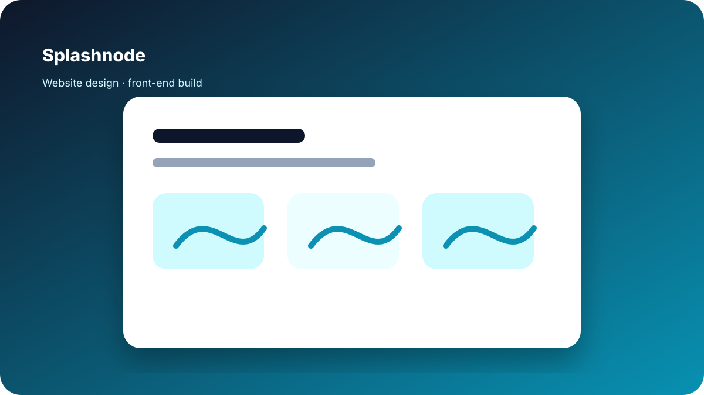

Splashnode
Designed and coded a website for a content, device, and data management platform. The goal was to translate a technical product into a clearer web experience with stronger product storytelling.

Role
Designer / Front-End Developer
Type
Marketing website for a technical platform
Focus
Product clarity, structure, responsive build
What I worked on
- Website layout and visual design.
- Front-end implementation for the website.
- Content structure for explaining platform capabilities.
- Responsive presentation of technical product value.
- Clearer sections for content, device, and data management themes.
This project is included because it reflects both design and implementation work, not just static UI mockups.